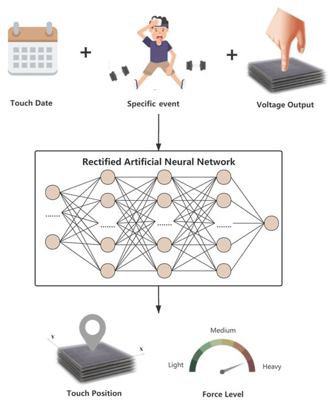
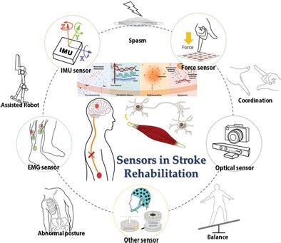

眼底医学影像 AI
利用自监督视觉模型从少标签眼底图像中学习可复用表征，服务多疾病筛查、风险预测和跨来源泛化。
Self-supervised vision
Fundus images
Multi-disease diagnosis
National Key Laboratory · Xi’an Modern Control Technology Research Institute
研究兴趣集中在医学影像自监督学习、眼底疾病智能诊断、压电触摸力感知与可穿戴健康系统。工作横跨视觉模型、传感器信号建模与智能人机交互，目标是让有限标签、复杂信号和真实场景中的健康评估更可靠。 Research at the intersection of self-supervised medical vision, piezoelectric force sensing, and wearable health intelligence.



Research Focus
研究围绕有限标签医学图像、压电触摸信号和可穿戴健康数据展开，关注模型在真实健康评估场景中的可靠性与可迁移性。
利用自监督视觉模型从少标签眼底图像中学习可复用表征，服务多疾病筛查、风险预测和跨来源泛化。
围绕压电触摸屏信号的长期稳定、力级分类和交互显示，设计机器学习方法提升低数据量场景下的识别可靠性。
结合传感器、模型和人机系统，面向近视风险、步态康复、儿童身体机能发育等健康评估问题。
Publications
研究成果覆盖医学影像自监督学习、眼底疾病诊断、压电触摸力感知、可穿戴传感与康复评估等方向。
Patents
专利工作面向智能触摸交互、可穿戴健康风险评估、肌力检测与儿童身体机能发育评估等应用。
Profile
个人经历以教育背景、代表性课程和主要荣誉为主。